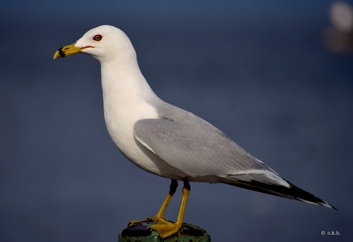

<!DOCTYPE html>
<html lang="en">

<head>
    <meta charset="UTF-8">
    <meta name="viewport" content="width=device-width, initial-scale=1.0">
    <title>Bird Info</title>
</head>

<body>

    <div id="map" style="height: 500px; width: 100%;"></div>

    <script src="https://maps.googleapis.com/maps/api/js?key=YOUR_API_KEY&callback=initMap"
        async defer></script>

    <script>
        let map;
        const aucklandlat = -36.8484;
        const aucklandLng = 174.7633;

        function initMap() {
            // Initialize the map
            map = new google.maps.Map(document.getElementById('map'), {
                zoom: 15,
                center: { lat: aucklandlat, lng: aucklandLng }
            });

            // Set up the marker
            const marker = new google.maps.Marker({
                position: { lat: aucklandlat, lng: aucklandLng },
                map: map
            });

            // Create an InfoWindow with the name and a picture
            const contentString = `
            <div>
                <h3>Larus Delawarensis</h3>
                
            </div>`;

            const infoWindow = new google.maps.InfoWindow({
                content: contentString
            });

            // Add a click event listener to the marker to show the InfoWindow when clicked
            marker.addListener('click', function () {
                infoWindow.open(map, marker);
            });
        }
    </script>

</body>

</html>